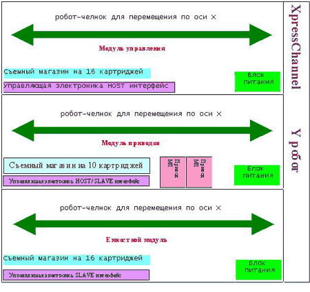
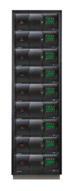
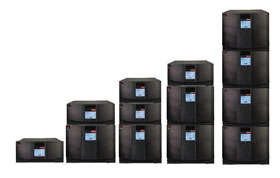
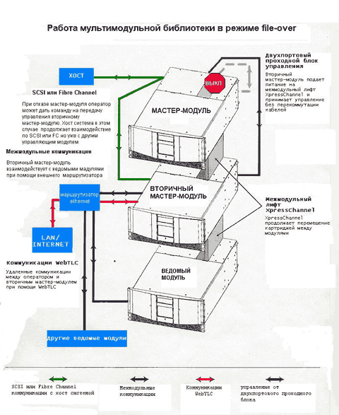

Александр Горловой,
менеджер по продукции (системы хранения данных), "Вист Групп"
gorlovoi@vistgroup.ru
В современных условиях информация приобретает все большее значение, соответственно ее потеря будет иметь более серьезные последствия. Потеря данных может быть вызвана разными причинами: ошибками оператора, сбоями ПО, неисправностями/отказами оборудования, воздействием вирусов. В общем случае полностью избежать потери данных нельзя, можно лишь максимально их уменьшить и свести к минимуму время восстановления работоспособности системы. Для этих целей периодически проводятся операции резервного копирования данных.
В качестве съемного носителя при резервном копировании, как правило, используется магнитная лента. Современные магнитные ленты обеспечивают наименьшую стоимость хранения данных, имеют срок хранения более 30 лет, благодаря чему их можно применять и для архивирования, а современные приводы магнитных лент позволяют получить высокие скорости чтения/записи и поиска.
Чем чаще будут проводиться сессии резервного копирования, тем меньше данных будет теряться при сбое в работе системы. С другой стороны, чем меньше времени будет занимать резервное копирование, тем лучше для систем с непрерывным циклом работы, а ведь объемы данных, подлежащих резервному копированию, имеют тенденцию удваиваться примерно каждые полтора года.
К системам резервного копирования данных предъявляются, таким образом, противоречивые требования: увеличение емкости, с одной стороны и уменьшение отводимого на копирование временного окна - с другой.
Кроме того, компании не всегда сразу требуется многотерабайтная библиотека магнитных лент, поначалу может оказаться вполне достаточно емкости 0,5-1 Тбайт или чуть больше. Со временем компания будет развиваться, объемы данных - расти, и наступит момент, когда прежней емкости окажется недостаточно. Но он может наступить и через год, и через два, а за это время используемые технология и формат магнитной записи могут устареть, а сама модель библиотеки магнитных лент - оказаться снятой с производства. Тогда нужно будет либо переходить на новую технологию магнитной записи (которая необязательно будет совместима с уже имеющимся парком картриджей), либо добавлять к парку оборудования другую модель библиотеки или даже библиотеку от другого изготовителя. В любом случае это будет неоптимально с точки зрения сервисной службы.
А что, если через некоторое время после покупки новой библиотеки вдруг потребуется использовать Fibre Channel вместо традиционного SCSI или появится совершенно новый интерфейс?
Остается еще надежность работы самой библиотеки. Каким бы надежным ни было устройство, вероятность отказа всегда есть. А что если библиотека выйдет из строя по причине отказа роботизированного механизма именно в тот момент, когда потребуется восстановить работу системы после сбоя? Если это одна из нескольких одинаковых библиотек - можно перенести картриджи и восстанавливать данные с другой библиотеки. А если это библиотека с приводом (приводами) новой технологии и переключиться некуда? Конечно, такая ситуация маловероятна, но все же вероятность ее ненулевая, и душевного спокойствия системному администратору это не прибавит.
ИТ-профессионалы требуют от изготовителей систем такой архитектуры, которая бы обеспечивала непрерывность работы, т. е. масштабируемость, надежность, высокий уровень готовности, удобство обслуживания. При проектировании продукта требуется учитывать и постоянно растущие емкости.
Для построения библиотек магнитных лент компания Overland Data (теперь Overland Storage, http://www.overlandstorage.com) предложила распределенную архитектуру роботизированной системы DRA (Distributed Robotic Architecture). В данной статье мы попробуем проследить эволюцию DRA и последние изменения в ней. Поскольку распределенная архитектура создана в компании Overland Data, то и обсуждение пойдет в основном на примерах ее оборудования.
Современные библиотеки магнитных лент имеют очень надежную конструкцию, в частности, несколько приводов магнитных лент, что позволяет избежать тотального сбоя при выходе из строя одного привода. Однако из-за того, что большинство библиотек не допускает расширения архитектуры, не удается и достигнуть желаемого уровня непрерывности работы. В таких конструкциях за перемещение картриджей между приводами и слотами отвечает единый большой и сложный роботизированный механизм.
В основе модульной архитектуры DRA лежит простая предпосылка, что библиотека, где используется распределенная группа простых, интеллектуальных, надежных, модульных роботизированных систем, будет иметь заметное преимущество по масштабируемости и доступности перед сложным монолитным роботом, чья неисправность, даже мелкая, полностью парализует работу всей библиотеки.
Чтобы удовлетворить потребность в масштабируемости, в индустрии дискового хранения был сделан поворот в сторону высокопроизводительных интерфейсов(таких, как SCSI, Fibre Channel), которые позволяют присоединять к общему интерфейсу кластеризованных серверов большее количество дисковых устройств (т. е. увеличение объема и производительности шло просто за счет увеличения числа дисков).
Первой шагом к блочному масштабированию был JBOD (Just Bunch of Disks) - отдельная коробка с дисками. Это, по существу, означало создание распределенной архитектуры роботизированных систем для дисковых хранилищ. Более высоким уровнем интеграции стало использование RAID-контроллеров для улучшения сохранности данных, т. е. введение роботизированного управления, при котором независимые диски работали согласованно и их можно было группировать.
Компания Overland Data была первым разработчиком и изготовителем монтируемых в стойке наращиваемых библиотек магнитных лент - LibraryXpress с приводами DLT. Представленная в 1996 году LibraryXpress сделала возможным пошаговое построение большой ленточной системы; кроме того, многомодульная конструкция позволяет гарантировать, что поломка одного узла не остановит работу всей системы (устраняется так называемая единая точка неисправности).
В 1999 году компания представила устройство WebTLC, первое независимое от платформы устройство на базе браузера для дистанционного управления библиотекой. В 2000 году представлено второе поколение - LibraryPro, где использованы приводы AIT, настоящий слот обмена (почтовый слот) и унифицированный единый модуль.
Архитектура DRA первого поколения
В основе DRA лежит та же блочная структура, что и для JBOD. Модуль DRA от Overland Data имеет следующие узлы:
- надежный робот-челнок для перемещения картриджа внутри модуля;
- электроника управления роботом через интерфейс в режиме ведущий /ведомый;
- поддержка работы дополнительного привода магнитных лент;
- слоты магазинного типа для картриджей;
- блок питания и охлаждения;
- порт для робота перемещения по оси Y.
Первой реализацией концепции DRA было выпущенное Overland Data семейство модульных библиотек LibraryXpress. Подход к разделению роботизированного механизма на уровне осей перемещения был первым шагом на пути к построению роботизированного механизма с действительно высокой готовностью.
Для библиотек с DRA первого поколения роботизированный механизм разделен для осей X и Y. Модуль содержит робот перемещения по оси X (робот-челнок). Этот механизм отвечает за перемещения картриджа внутри модуля, т. е. между слотами, где хранятся носители, приводами магнитных лент и портом робота перемещения по оси Y.
Для первого поколения распределенных роботизированных механизмов DRA существует три типа модулей. Это модуль приводов (он может использоваться автономно), модуль управления, или мастер-модуль (хост-интерфейс для библиотеки из нескольких модулей), и емкостной модуль (ведомый модуль с картриджами).
Модуль приводов включает в себя цепи управления роботом, робот-челнок, один или два привода магнитных лент, съемный магазин на 10 картриджей, порт XpressChannel для перемещения картриджей между модулями и блок питания. При работе в многомодульной библиотеке модуль приводов работает только в режиме ведомого, предоставляя модулю управления выступать в качестве хост-интерфейса.
Мастер-модуль, или модуль управления, состоит из интерфейсной логики (хост-интерфейс), цепей управления ведомым роботом, робота-челнока, съемного магазина на 16 картриджей и блока питания.
В емкостной модуль входят интерфейсная логика (интерфейс slave - ведомый), цепи управления ведомым роботом, робот-челнок, съемный магазин на 16 картриджей, порт XpressChannel и блок питания.
Используя эти три относительно простых модуля, пользователь может сам построить любую конфигурацию (рис. 1), начиная с одиночного модуля приводов, работающего автономно, и до составной многомодульной библиотеки с максимальным числом модулей - девятью.
|  |
| Рис. 1. Библиотека DRA первого поколения из трех модулей (два привода, 42 картриджа).
|
Концепция DRA позволяет регулировать емкость и производительность библиотеки таким образом, чтобы максимально эффективно использовать капиталовложения. Используя стандартные модули в различных сочетаниях, пользователь имеет достаточно степеней свободы, чтобы построить собственную масштабируемую конфигурацию, не встречая ограничений, свойственных монолитным системам.
Второе после масштабируемости преимущество DRA - это простота обслуживания. Любая неисправность быстро диагностируется на уровне модуля. Заменить неисправный модуль легко благодаря разделенной конструкции роботизированного механизма.
Второе поколение DRA
В архитектуре DRA второго поколения реализована "одномодульная" концепция, что еще более упростило интеграцию, масштабируемость и обслуживание этих библиотек. В модулях второго поколения увеличилась плотность хранения и появилась возможность устанавливать в каждый модуль от 0 до 2 приводов. Благодаря этому стало легче конфигурировать и оптимизировать библиотеки по емкости, производительности и степени резервирования, используя одни и те же блоки.
Главное улучшение в архитектуре второго поколения - то, что во всех модулях имеется возможность управления роботом перемещения картриджей по оси Y (т. е. между модулями), что обеспечивает совершенно новый уровень доступности. Иными словами, модуль второго поколения можно сконфигурировать так, чтобы он работал как ведущий (мастер-модуль). Это важно потому, что библиотека может продолжать работать во время ремонта или замены одного из модулей.
И последнее улучшение состоит в том, что упростилось присоединение к библиотеке межмодульного лифта - канала XpressChannel. В первом поколении он крепился как к библиотеке, так и к шкафу (стойке), где размещались модули. Поэтому при инсталляции библиотеки DRA первого поколения приходилось еще решать вопросы выбора и расположения шкафа. Для второго поколения DRA канал XpressChannel крепится только к библиотеке.
Пример библиотеки второго поколения DRA - AIT LibraryPro от Overland Data (рис. 2).
|  | Рис. 2. Библиотека второго поколения AIT LibraryPro.
|
Третье поколение DRA
В архитектуре DRA третьего поколения особое внимание уделено высокопроизводительному интерфейсу с высокой плотностью и доступностью. Пример библиотеки третьего поколения - LibraryXpress Neo Series (рис. 3).
|  | Рис. 3. Масштабируемые модульные библиотеки магнитных лент третьего поколения - Neo 2000 и Neo 4000.
|
Высокая плотность
В ответ на требования больших емкостей третье поколение DRA библиотек, LibraryXpress Neo Series, имеет два съемных магазина для размещения картриджей (26 слотов для DLT или 30 слотов для LTO Ultrium) - вдвое больше, чем размещается в модуле приводов первого поколения. Это стало возможно благодаря новой конструкции робота перемещения картриджей между модулями и робота перемещения внутри модуля, который способен поворачиваться на 180o.
Возможность пользоваться разными носителями дает гибкость в выборе форматов лент. Один и тот же модуль Neo Series одновременно поддерживает DLT/SDLT и LTO Ultrium на уровне магазинов и приводов. Поддержка использования смешанных носителей - это, с одной стороны, хорошая защита инвестиций, а с другой - позволяет перейти на новые технологии, не теряя возможности работать со старыми форматами и приводами.
Доступность и удобство обслуживания
При проектировании модулей третьего поколения особое внимание уделялось удобству их обслуживания пользователем и устойчивости системы при отказе модуля управления. Преимущество DRA в том, что для повышения доступности за небольшие деньги можно добавить еще один дежурный модуль (об этом будет сказано ниже).
Конструкция всех модулей Neo Series обеспечивает высокий уровень доступности за счет применения узлов CRU (Customer Replaceable Units), т. е. таких, которые пользователь может менять самостоятельно. Благодаря этому существенно улучшилась ремонтопригодность: для замены приводов, блоков питания, дополнительных карт теперь не требуются специальные инструменты и квалификация. Средний пользователь может сам выполнять плановые процедуры, связанные с обслуживанием и заменой узлов CRU, что снижает стоимость владения системой. Наличие внутренних изолированных шин SCSI для каждого привода позволяет заменять приводы, не выключая систему и не останавливая выполнения операций ввода-вывода.
Управляемость, ремонтопригодность и обслуживаемость библиотек Neo Series улучшены также за счет дистанционного управления через локальную сеть. Контроллер библиотеки DRA Neo Series теперь имеет полную сетевую поддержку и оборудован соединителем RJ-45. При помощи WebTLC можно управлять библиотекой по локальной сети. WebTLC предоставляет следующие функции удаленного мониторинга и управления:
- отображение текущего состояния;
- дистанционное управление картриджами;
- конфигурирование библиотеки;
- конфигурирование приводов;
- извещение SNMP;
- чистка приводов;
- удаленная диагностика;
- модернизация внутреннего firmware;
- обзор статистики работы библиотеки.
Архитектура Neo Series увеличивает отказоустойчивость за счет контролируемой хост-системой функции избежания отказов модуля управления. Теперь любые два или более модулей Neo Series можно сконфигурировать для согласованной работы с целью увеличения отказоустойчивости системы управления библиотекой.
На этом следует остановиться несколько подробнее, так как отказоустойчивость есть один из важнейших критериев построения современной системы резервного копирования/архивирования данных или системы иерархического хранения.
Процедура fail-over
Появление Neo Series 2000 и 4000, можно сказать, снова установило стандарт на масштабируемую архитектуру магнитных лент. Эти модели позволяют получить в одной стойке емкость до 48 Тбайт (с учетом сжатия 2:1). Третье поколение масштабируемых систем обладает всеми преимуществами предыдущих плюс встроенные возможности WebTLC, гибкость конфигурации (можно сочетать модули разного размера) и удачное сочетание высокой готовности и хорошей обслуживаемости.
В основе всего набора возможностей лежит устойчивость к сбоям ведущего, или управляющего модуля, - так называемая процедура fail-over, выполнение которой позволяет системе выбираться из аварийных ситуаций.
В любой многомодульной системе Overland Data один из модулей (обычно самый верхний в стойке) назначается ведущим, или мастер-модулем. Это тот модуль, к которому подключается хост-система. Остальные модули - ведомые и работают под управлением мастер-модуля.
Мастер-модуль выполняет следующие функции. ·
- Общение с хостом и прикладным управляющим ПО через SCSI или (опционально) FC. Весь стек модулей представляется как одна большая библиотека с количеством приводов X и количеством слотов Y. Поэтому библиотека будет совместима с управляющим ПО, хотя последнее и не имеет представления о модульной архитектуре Overland.
- Текущее общение с остальными модулями в целях картирования носителей, полосковых меток на картриджах, мониторинга статуса приводов и механизмов, а также для сбора информации о работе всей системы.
- Управление работой межмодульного лифта XpressChannel и координация работы самих модулей.
- Коммуникации в локальной сети или Интернете для поддержки функций WebTLC - удаленной диагностики, мониторинга и управления.
- Управление внутренними операциями самого мастер-модуля.
Как было сказано выше, в многомодульных библиотеках Overland нет такого узла или компонента, отказ которого вывел бы из строя всю систему. При отказе одного из ведомых модулей недоступен становится только этот модуль. Однако в случае отказа мастер-модуля все обстоит сложнее.
В предыдущих поколениях масштабируемых библиотек отказ мастер-модуля повлек бы за собой потерю функциональности многомодульной системы (хотя всегда оставалась возможность использовать любой ведомый модуль в качестве независимой автономной библиотеки магнитных лент). Для восстановления многомодульности требовался ремонт мастер-модуля или переконфигурация одного из ведомых модулей в мастер-модуль и соответствующая перекоммутация кабелей.
В архитектуре Neo Series большинство этих сложностей устранено. В многомодульной системе Neo один модуль (обычно верхний) назначается ведущим, а второй (обычно следующий в стойке) - вторичным мастер-модулем. Сочетание внутреннего системного ПО, конструктивных особенностей, кабельных соединений позволяет системе не терять работоспособности даже в случае выхода из строя ведущего модуля.
Более того, передача управления вторичному ведущему модулю не требует физической переконфигурации системы или перекоммутации кабелей. Фактически режим fail-over можно задать дистанционно при помощи WebTLC.
В Neo Series коммуникации между мастер-модулями и ведомыми модулями происходят по локальной шине Ethernet. WebTLC использует ту же самую шину. Для поддержки локальных межмодульных коммуникаций и внешних коммуникаций WebTLC даже в случае отказа мастер-модуля шине Ethernet требуется внешний (относительно самой многомодульной библиотеки) маршрутизатор. Это позволит, не нарушая работы всей системы, выключить, изъять или заменить отказавший модуль. Процедура fail-over позволяет "мягко" передать управление от ведущего к вторичному ведущему модулю, так как все модули с точки зрения коммуникаций равнозначны. И при инициализации процедуры fail-over к вторичному мастер-модулю переходит не только управление системой, но и все функции WebTLC (рис. 4).
|  |
| Рис. 4. Выполнение процедуры fail-over.
|
Еще одна особенность Neo Series - улучшенная двухпортовая система управления электродвигателями межмодульного проходного лифта XpressChannel. Оба модуля (ведущий и вторичный ведущий) подключаются кабелями к проходному контроллеру электродвигателей. В нормальных условиях мастер-модуль управляет электродвигателями, а порт вторичного ведущего модуля находится в "спящем" режиме. При передаче управления к вторичному модулю порт отказавшего мастер-модуля игнорируется, а управление осуществляет вторичный мастер-модуль (ставший теперь первичным).
И последнее условие, которое требуется для выполнения процедуры fail-over "без приложения рук": вторичный ведущий модуль при отказе мастер-модуля должен иметь возможность взаимодействовать с хост-системой по интерфейсу SCSI или FC. Это выполняется благодаря тому, что кабельное соединение портов SCSI хост-системы, мастер-модуля и вторичного мастер-модуля имеет вид гирлянды. При нормальной работе порт SCSI вторичного мастер-модуля находится в "спящем" режиме. При выполнении процедуры fail-over мастер-модуль принудительно выключается, и вторичный модуль, ставший мастер-модулем, начинает коммуникации с хост-системой, используя тот же самый SCSI ID (адрес на шине SCSI). Кроме того, он представляет всю библиотеку хост-системе тем же самым образом, что и отказавший мастер-модуль. Такой подход позволяет "обмануть" хост-систему, для которой как бы продолжается работа с первичным мастер-модулем, а вышедшие из строя приводы и слоты будут просто иметь статус недоступных. Большинство пакетов корпоративного прикладного ПО достаточно интеллектуальны для того, чтобы перераспределить операции ввода-вывода, связанные со ставшими вдруг недоступными ресурсами библиотеки, на оставшиеся доступные приводы и слоты.
После того, как отказавший мастер-модуль будет отремонтирован, его можно снова поставить в систему и провести процедуру fail-over в обратном направлении.
Процедуру fail-over можно выполнять как вручную, так и автоматически. В некоторых типах сетевых устройств высокой готовности реализовано ее автоматическое выполнение. Тем не менее в Neo Series предпочтение отдано ручному запуску fail-over перед автоматическим.
Дело здесь в том, что анализировать сбои в таких сложных системах, как библиотеки магнитных лент, трудно. Система пока не имеет возможности сама автоматически диагностировать природу сбоя или неисправности. Neo Series имеет расширенную систему тревог и предупреждений, передаваемых при помощи протоколов SNMP и SMTP (e-mail), а также набор диагностических процедур, которые можно запустить как на месте, так и дистанционно. Эти ресурсы позволят оператору определить, что же на самом деле случилось с системой, и принять решение о запуске процедуры fail-over.
Применение DRA
Библиотеки магнитных лент Neo Series можно отнести как к устройствам для рабочих групп (если работает только один модуль), так и к устройствам масштаба предприятия (в случае нескольких модулей). Соответственно и требования к ним будут различаться.
Например, компания пользуется одним модулем Neo 2000, который подключен к серверу традиционным образом, по шине SCSI. По мере роста потребностей через некоторое время прибавляется второй модуль и т. д. Формально система, изначально бывшая хранилищем для рабочей группы, переходит в другой класс - устройств масштаба предприятия. При этом скорее всего потребуется организовать сеть хранения данных (SAN), где нужен уже не SCSI-интерфейс, а, к примеру, Fibre Channel. В качестве перспективной альтернативы для построения сетей хранения данных используются, в частности, новый интерфейс iSCSI и среда GigE (гигабитный Ethernet).
Весьма желательно, чтобы библиотеку можно было использовать и в сегодняшних, и в завтрашних сетях хранения данных, - не покупать же всякий раз новую. Поэтому в архитектуре Neo Series используется концепция, свойственная скорее компьютерным системам: использование шины PCI и слотов расширения. Правда, в данном случае это не та шина PCI, что в персональных компьютерах, а промышленный стандарт Compact PCI. Фирменное ее название - VIA (Virtual Interface Architecture, архитектура с виртуальным интерфейсом). Благодаря этой особенности архитектуры не бывает проблем с подключением, так как при появлении новых интерфейсов всегда можно вставить соответствующую плату в свободный слот.
Кроме того, за счет возможности партиционирования, предоставляемой на уровне firmware, Neo Series хорошо подходит и для работы в гетерогенных сетях хранения данных SAN.
И наконец, в подтверждение преимуществ систем DRA первого поколения от Overland Data отметим, что на сегодня по всему миру установлено более 40 тыс. подобных систем.